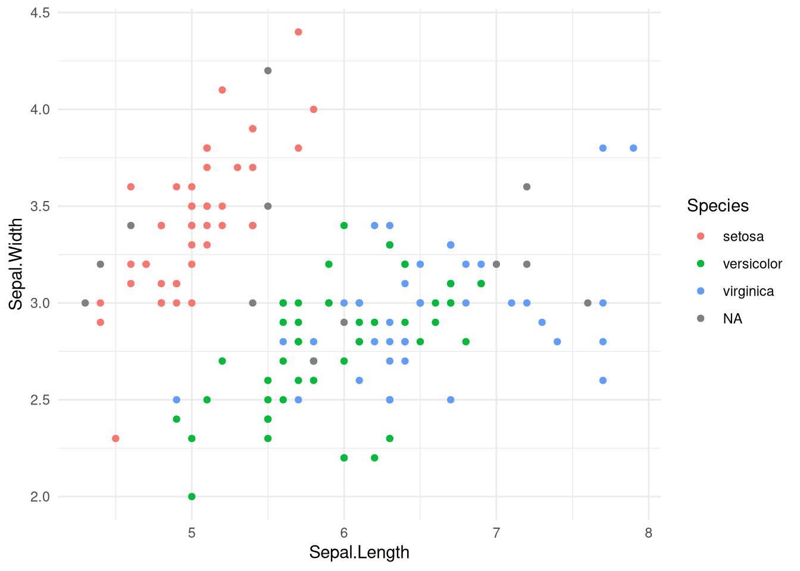
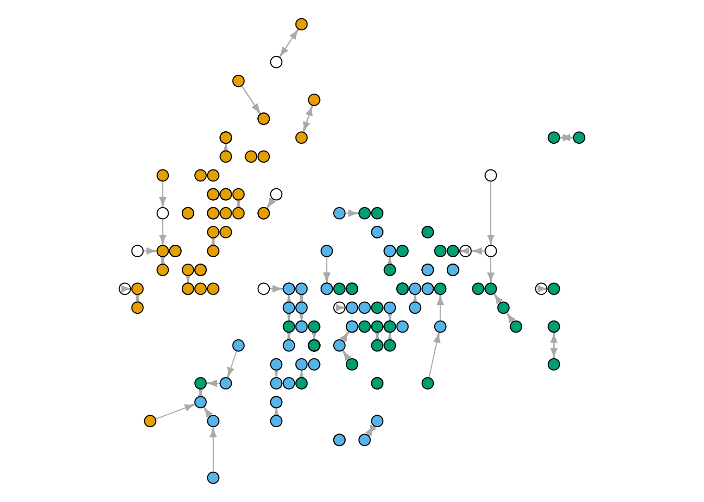

25 Lähinaabrid
Vaatluse lähimad naabrid on sellised vaatlused, mis valitud tunnuse väärtuste mõttes on meid huvitavale vaatlusele kõige sarnasemad ehk asuvad sellele kõige lähemal. Läheduse määrab statistiline kaugus (Peatükk 16), mistõttu sarnasuse aluseks olevad tunnused peavad olema mõõdetud arvskaalal. Lähinaabrite meetodil ei ole muid eeldusi, aga tuleb arvestada, et liiga suure arvu tunnuste alusel kauguse mõõtmisega kaasnevad ka suured kaugused. Selle tulemusel ei pruugi kaugused enam vaatluste sarnasust hästi iseloomustada (curse of dimensionality).
Lähinaabrid (k-nearest neighbors) tähendab igale vaatlusele kõige sarnasemate vaatluse valimist tunnuste ruumis lähtudes statistilisest kaugusest. Sealjuures peab olema eelnevalt määratud lähimate vaatluste arv \(k\). Vaatluste võrdlemisel lähimate naabritega saame prognoosida selliste tunnuste väärtusi, mida me ei kasutanud kauguste arvutamisel.
Lähinaabrite meetodit võib niisiis käsitleda ka statistilise mudeli või vähemalt algoritmina, milles sisendtunnusteks on kauguse arvutamisel aluseks olevad tunnused. Kui ei ole teada mõni vaatluse väljundtunnuse väärtus, siis selle saab tuletada lähimate naabrite vastava tunnuse väärtuste alusel. Sealjuures on prognoosimisel tegemist klassifitseerimisega nimiskaalal väljundtunnuse korral ja regressiooniga kui väljundtunnus on arvskaalal.
Lähinaabrite meetodi rakendamine prognoosimiseks koosneb alljärgnevatest sammudest.
- Valime lähimate naabrite arvu \(k\). Kõige sobivama \(k\) leidmiseks saame kogu tegevust erinevate \(k\) väärtustega korrata ja valida sellise \(k\), mis annab kõige täpsema prognoosi.
- Arvutame kõikide vaatluste vahel Eukleidilise kauguse tunnuste ruumis.
- Määrame igale vaatlusele arvu \(k\) lähimad vaatlused.
- Nimiskaalal väljundtunnuse korral määrame igale vaatlustele naabrite seas kõige sagedasema nimitunnuse väärtuse. Arvskaalal väljundtunnuse puhul on prognoos aga naabrite väärtuste nt aritmeetiline keskmine.
Lähinaabrite meetodi alusel prognoosimise puuduseks on prognooside sõltuvus arvust \(k\). Samuti on meetod arvutuslikult kulukas, sest iga vaatluse kohta tuleb kõik kaugused teistest vaatlustest eraldi leida.
Kasutame järgnevas näites andmeid iirise taimede erinevate osade suuruste ja liigi kohta. Vaatame esimesi ridu ja loetleme liikide esinemissagedused.
head(iris) Sepal.Length Sepal.Width Petal.Length Petal.Width Species
33 5.2 4.1 1.5 0.1 setosa
84 6.0 2.7 5.1 1.6 versicolor
70 5.6 2.5 3.9 1.1 versicolor
74 6.1 2.8 4.7 1.2 <NA>
42 4.5 2.3 1.3 0.3 setosa
111 6.5 3.2 5.1 2.0 virginicatable(iris$Species, useNA = 'ifany')
setosa versicolor virginica <NA>
44 43 43 20 Andmetabelis on õietupe (sepal) ja õiekrooni (petal) pikkused ja laiused ning liik (Species). Sagedustabelist ilmneb, et 20 taime puhul on liik teadmata.
Uurime seost õietupe suuruste ja liigi vahel.
library('ggplot2')
ggplot(iris) + aes(x = Sepal.Length, y = Sepal.Width, color = Species) +
geom_point() +
theme_minimal()
Näeme, et õietupe mõõtmete alusel on võimalik teatud juhtudel tuletada liik. Kasutame laiendusest cccd funktsiooni nng(), et leida ja joonistada iga punkti üks lähim naaber (\(k = 1\)).
library('cccd')
lnJoonis <- iris[, 1:2] %>% as.matrix %>% nng(k = 1)
par(mar = rep(0,4))
plot(lnJoonis,
edge.arrow.size = .5,
vertex.size = 5, vertex.label = NA,
vertex.color = iris$Species)
Joonisel Joonis 25.2 on valgega tähistatud need taimed, mille liik on teadmata. Määrame selle liigi lähima naabri liigi alusel, kasutades funktsiooni knn laiendusest class. Selleks peame funktsiooni argumentidena andma sisendtunnuste väärtused eraldi teada olevate ja teadmata liikidega ridade kohta. Samuti peame andma liigid nende ridade kohta, kus see on teada.
library('class')
ln <- knn(train = iris[!is.na(iris$Species), 1:2], # Teada liigiga read
test = iris[is.na(iris$Species), 1:2], # Teadmata liigiga read
cl = iris[!is.na(iris$Species), 'Species'], # Teada liigid
k = 1) # Naabrite arv
ln [1] versicolor virginica setosa versicolor versicolor virginica
[7] setosa virginica virginica setosa setosa virginica
[13] setosa setosa virginica versicolor virginica versicolor
[19] virginica virginica
Levels: setosa versicolor virginicaFunktsioon knn väljastab prognoosid ridade kohta, mille korral liik oli teadmata. Saame nendega asendada puuduvad väärtused.
iris[is.na(iris$Species), 'Species'] <- as.character(ln)Kuvame joonisel Joonis 25.1 esitatud seose uuesti, et näha ka prognoositud liike.
ggplot(iris) + aes(x = Sepal.Length, y = Sepal.Width, color = Species) +
geom_point() +
theme_minimal()
Võrdle tulemust joonistega Joonis 25.1 ja Joonis 25.2.